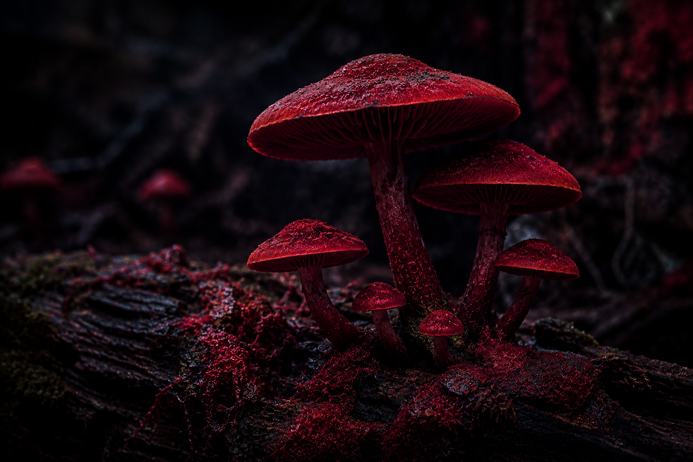

Erva Sombria

Uma planta fictícia de aparência escura e misteriosa, conhecida dentro do universo do site por suas folhas incomuns.
Uma planta fictícia de aparência escura e misteriosa, conhecida dentro do universo do site por suas folhas incomuns.

Uma espécie lendária que aparece em antigas histórias e possui folhas quase transparentes.

Uma planta fictícia encontrada em cavernas e ambientes úmidos dentro das histórias do herbário.

Uma planta misteriosa associada a lendas sobre sorte, azar e acontecimentos inexplicáveis.

Uma raiz completamente fictícia presente nas histórias de alquimistas e exploradores.